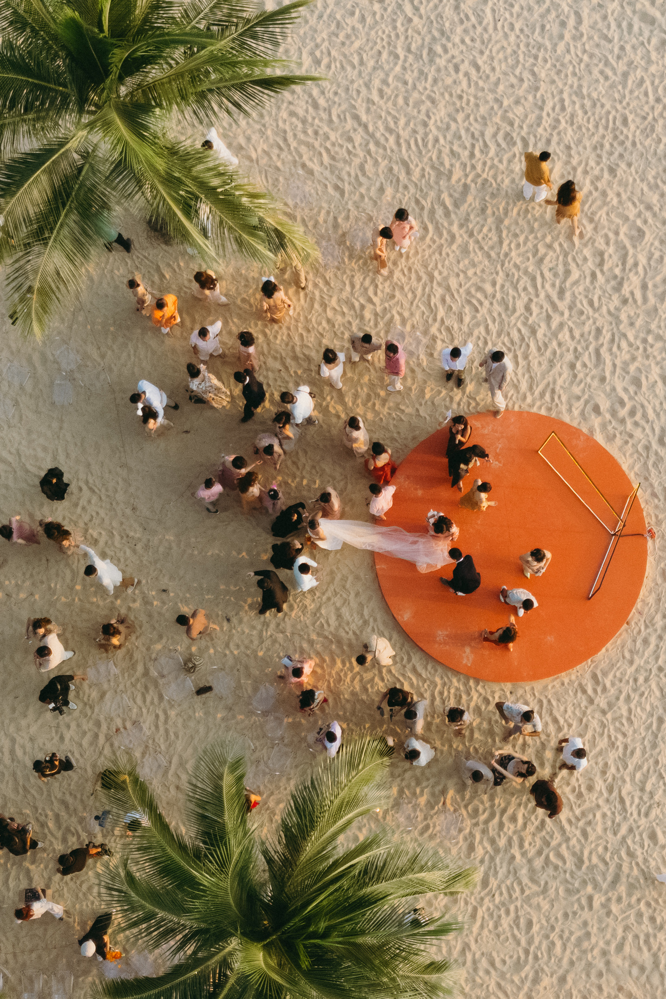

01
A colour can carry a memory.
For Lily and Antoine, Mai Trung Thu's palette moved from paper to candlelight in a room at The Reverie Saigon.
Vietnam enters the work through what can be seen, heard and held. A colour can carry a memory. A place can set the scale of a day. A welcome can stay with a guest long after the evening ends.